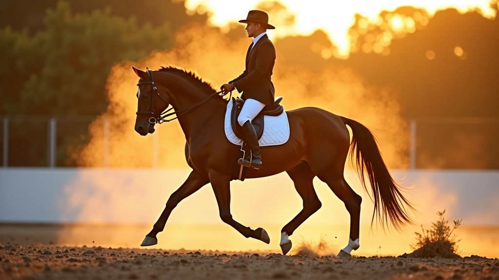

أسئلة شائعة عن تدريب تغيير قدم العدو
إجابات مباشرة على أكثر الأسئلة التي يطرحها الفرسان حول إتقان هذه المهارة الأساسية

هذا يعتمد على مستواك الحالي وتكرار التدريب. معظم الفرسان الذين لديهم أساس جيد يستطيعون تحقيق تغيير قدم أساسي خلال 4-6 أسابيع من التدريب المنتظم. لكن إتقان التقنية بشكل كامل والقدرة على تنفيذها بثقة وسلاسة يأخذ وقتاً أطول — عادة ما بين 3 إلى 6 أشهر من الممارسة المستمرة.
تغيير القدم البسيط يحدث عندما يتغير الحصان من قدم للأخرى في قفزة واحدة خلال العدو. تغيير القدم المزدوج يحدث عندما يتغير الحصان قدميه في قفزتين متتاليتين بسرعة جداً. تغيير القدم المزدوج أسهل للبدء به، وهو الخطوة الأولى قبل محاولة البسيط.
معظم الخيل السليمة جسدياً تستطيع تعلم هذه المهارة، لكن بعض الخيل تتعلم بسرعة أكثر من غيرها — هذا يتعلق بالمزاج والقدرات الطبيعية. المهم هو أن يكون الحصان بصحة جيدة وليس لديه مشاكل في العمود الفقري أو الأطراف. التدريب الصحيح والصبر يحدثان فرقاً كبيراً.
الأخطاء الأكثر شيوعاً تشمل: الضغط المفرط على الحصان قبل أن يكون مستعداً، عدم الحفاظ على التوازن والجلسة الصحيحة، وعدم فهم توقيت الإشارات. كثير من الفرسان يحاولون تغيير القدم بسرعة كبيرة جداً قبل أن يتقنوا الأساسيات — الصبر والممارسة المنظمة هما المفتاح.
تغيير القدم الصحيح يشعر به الفارس كقفزة سلسة وليست فجائية أو عنيفة. ستشعر بأن الحصان يغير اتجاه حركته بسلاسة، والعدو يبقى منتظماً ومتزناً. إذا كان هناك ارتجاج أو إحساس بعدم الاستقرار، فغالباً يعني أن الحصان لم ينفذ التغيير بشكل صحيح.
مدرب متخصص يوفر لك ردود فعل فورية وتصحيحات دقيقة تسرع عملية التعلم بشكل كبير. يمكنك أن تتعلم أشياء كثيرة بمفردك، لكن قد تستغرق وقتاً أطول وقد تطور عادات سيئة. نوصي بجلسات منتظمة مع مدرب ذي خبرة، خاصة في المراحل الأولى.
لا تجد الإجابة التي تبحث عنها؟
تواصل معنا مباشرة وسنساعدك في الإجابة على أي سؤال أو استفسار حول برامج التدريب لدينا
تواصل معنا الآن